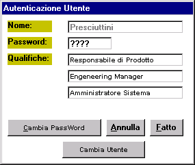

Il sistema Lancio può funzionare sia in modalità autonoma, che con collegamento alla rete aziendale.
Nel secondo caso le aree 'Archivi' ed 'Eseguibili' (vedi Aree di lavoro) possono coincidere con le corrispondenti aree aziendali residenti sul server.
Tuttavia, in questo secondo caso, poiché gli archivi contengono anche dati modificabili, e poiché può essere opportuno controllare l'accesso ad alcune applicazioni del sistema aventi carattere di riservatezza, l'accesso al sistema Lancio è regolato da una procedura di identificazione dell'utente che parte dalla maschera sotto riprodotta. (Per maggiori dettagli vedi Autenticazione Utente.

Il tipo di funzionamento attuale è determinato da: